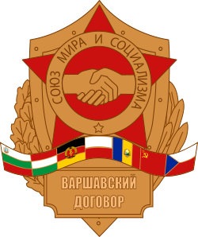
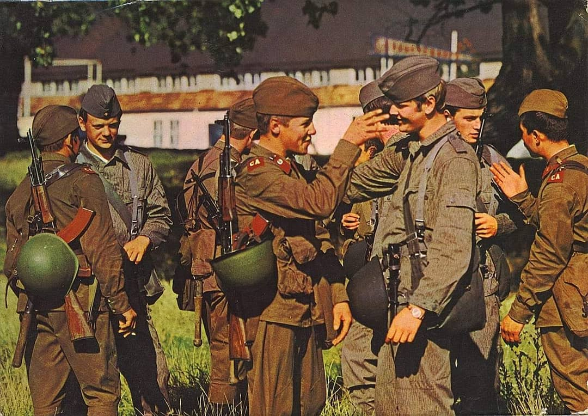
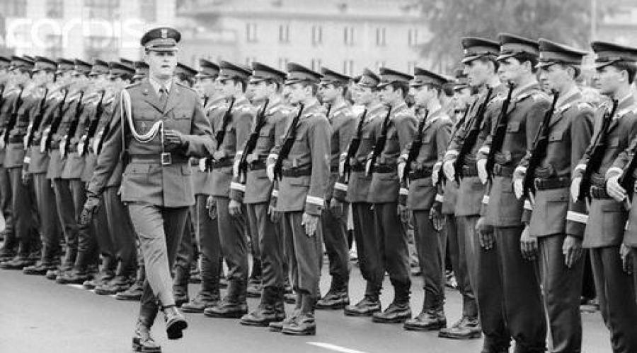
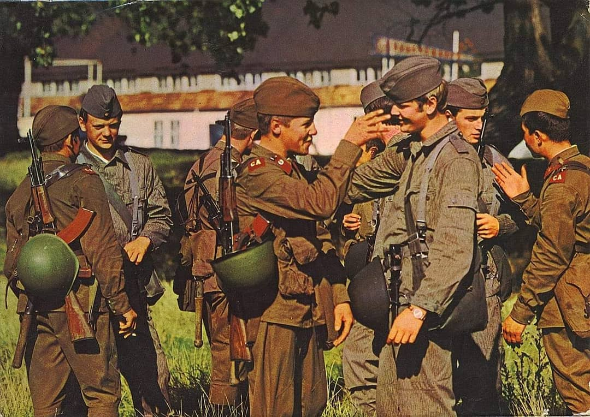
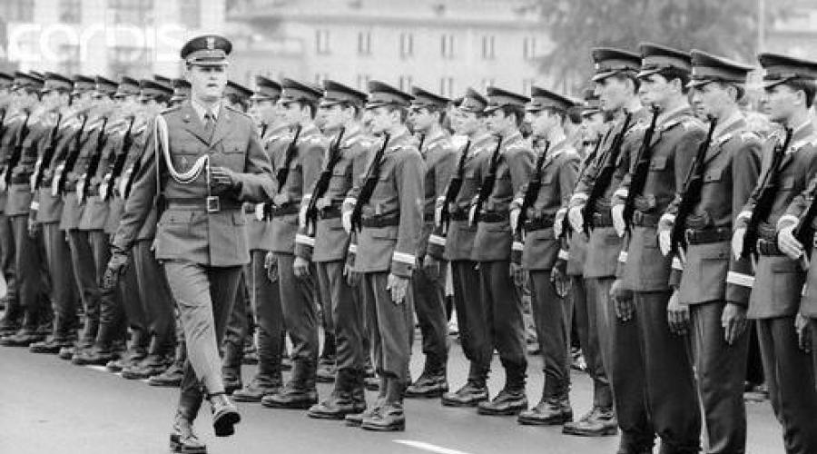

Варшавският договор
Тип:
Договор
Време:
1955-1991
ОВД
(Договор за приятелство, сътрудничество и взаимна помощ) от 14 май 1955 г. — документ, оформивший създаване на военен съюз на европейските социалистически държави, при водещата роля на СЪВЕТСКИЯ съюз и Варшавския договор (ОВД) и закрепивший биполярность света на 36 години. Сключването на договора е ответна мярка за присъединяването на Германия към НАТО. Договорът е подписан от Албания, България, Унгария, ГДР, Полша, Румъния, СССР и Чехословакия на 14 май 1955 г.на Варшавската среща на европейските държави за мир и сигурност в Европа. Договорът влиза в сила на 5 юни 1955 година. На 26 април 1985 г., поради изтичане на срока, е удължен с 20 години. Числеността на Въоръжените сили на държавите от Варшавския договор на 1 юли 1987 г. в размер на 6 435 900 човека След преместване в 1989-1990 г. на комунистическите режими в страните от Централна и Източна Европа съществуването на Варшавския договор като военно-политически съюз на социалистическите страни е загубило смисъл. На 25 февруари 1991 г. държавите — членки на ОВД премахват военните си структури, а на 1 юли 1991 г.в Прага подписват протокол за пълно прекратяване на Договора. Договорът се състои от преамбюла и 11 статии. В съответствие с условията и Устава на ООН на държавата — участниците Варшавския договор обязывались да се въздържат в международните си отношения от заплаха със сила или нейното прилагане, а в случай на въоръжено нападение на някой от тях — да подвергшимся нападнат от държавите незабавна помощ с всички възможни средства, какви представятся им необходими, включително употребата на въоръжените сили.
 



Източници:
wikipedia.org;